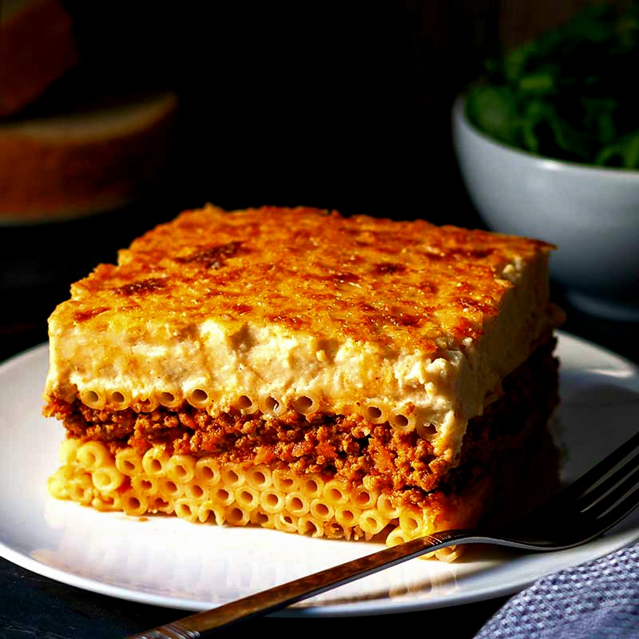

PASTITSIO (GREEK LASAGNA)

Pastitsio is a creamy, cheesy baked pasta dish that is sometimes called Greek lasagna
. Pastitsio is traditionally made with large tubular pasta like bucatini or penne, not lasagna noodles. Bucatini is a long, slender, and hollow noodle, resembling something like a drinking straw made of pasta.
Pastitsio combines a meat and tomato sauce with the pasta and is topped with a thick bechamel sauce. The name derives from "pasticcio," which loosely translates to hodgepodge
.
INGREDIENTS
BECHAMEL SAUCE
- 6 tablespoons of unsalted butter
- ¾ cup of all-purpose flour
- 4 cups of whole (or soy) milk, warmed until hot
- 1 ½ teaspoons of salt
- 3 large eggs
MAIN DISH
- 4 tablespoons of unsalted butter
- 2 medium red onions, chopped
- 2 pounds of 90% lean ground beef
- 1/8 tablespoon of ground cinnamon
- salt and pepper, to taste
- ½ cup water
- 2 tablespoons of tomato paste
- 1 pound of ziti pasta
- 3 large eggs, beaten
- 1 ½ teaspoons of salt
- 12 to 16 ounces Kasseri or Parmesan cheese, grated
INSTRUCTIONS
PREPARE THE BECHAMEL SAUCE
- Melt the butter in a medium saucepan. Whisk in the flour and then gradually whisk in the hot milk. Cook, whisking constantly, until the sauce is smooth and thickened. Stir in the salt, remove from heat and let it cool. When the sauce is lukewarm, whisk in the eggs. Set aside.
PREPARE THE MEAT LAYER
- Melt 4 tablespoons of butter in a large skillet. Add the onions and sauté until they’re softened and golden. Crumble the beef into the skillet and cook with the onions until the beef is browned. Stir in the cinnamon, salt, and pepper. Stir in the water and tomato paste, and simmer for 5 minutes. Set aside.
PREPARE THE PASTA LAYER
- Cook ziti according to the directions on the package. Drain and rinse with cool water. When pasta has cooled down, stir in the beaten eggs and 1 ½ tablespoons of salt.
ASSEMBLE THE DISH
- Preheat your oven to 350 degrees F. Spray a deep 9x13-inch casserole dish with nonstick spray. You really need a deep casserole dish for this recipe (deeper than the usual 9x13-inch Pyrex).
- Scoop half of the pasta into the bottom of your prepared dish. Sprinkle generously with cheese. Spoon on the meat mixture to create an even layer and then, sprinkle with another layer of cheese. Scoop the remaining pasta on top of the meat and sprinkle more cheese! Top it off with the bechamel sauce and sprinkle with the remaining cheese.
- Bake the dish for 45 minutes, or until the sauce is bubbly and golden on top. Let it sit at room temperature for at least 20 minutes before serving it (but it is suggested that you refrigerate it to let the layers set…and then warm up to serve).
Return to Eva's Delicious Recipes